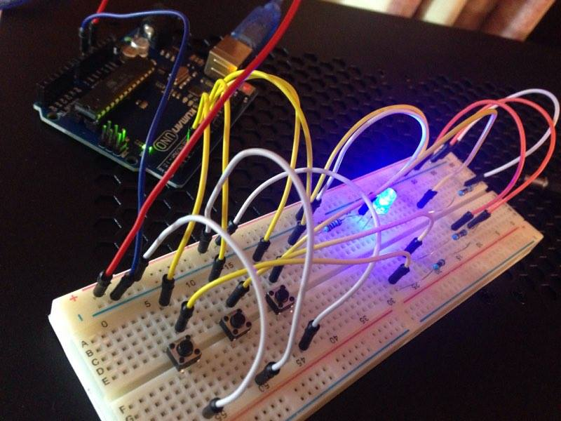

Human Visual Framerate
A Rough Test of Human Visual Perception's "Framerate"
A Beginner Arduino Project
This was a fun little project I did to learn the basics of using Arduino, and to explore a question I've had for a while - what is the "framerate" of your visual perception, if such a thing exists? It wasn't a very detailed project, and it wasn't a super well-constructed test (n=1, that being myself, and not blinded in any way), but it was a fun way to spend a couple hours.
 The general idea of this project is that the LED begins blinking at 60hz, and there are three buttons on the board. The left button decreases the blink speed by 10hz, the right one increases the blink speed by 10hz, and the middle button is a modifier button that, when held down, will change the amount the previous two buttons change to 1hz (left + middle = -1hz, right + middle = +1hz). The code and the wiring was pretty simple; you can think of it as a simple extension of the sample "blink" code but with a few more buttons and variables. Long story short, it's a strobe light that you can precisely control the frequency for.
To use this, I took it into a dark room and removed all other sources of light. I did three trials, looking in different places (directly into the LED, at the LED from the side, and at the light "spill" on the table). I then adjusted the frequency of the blinks until I could no longer percieve the light flickering, and recorded the result. Unfortunately the LED wouldn't flicker faster than 280hz (it would just turn off) so I couldn't get any data beyond that.
| Into Light | From Side | At Spill | |
|---|---|---|---|
| Result | 280hz+ | 68hz | 47hz |
I thought it was interesting that the results varied so much depending on what I looked at (it seems weird at first that I would be able to percieve a light source flickering but not be able to percieve the light spill from a light source flickering at the same frequency). So I did some googling and came upon this excellent stackexchange post that could shed some light (no pun intended) on why this could be the case. Other papers about this field of research set the framerate at 60hz, a number which is "hoped to be high enough," and mention that some speculation exists for human visual perception exceeding 300hz. You also don't really percieve things around you in perfect chronological order - your mind does some preprocessing on your sensory inputs before you recieve them in order to percieve things as happening at the same time (here's an obvious example; touch your nose and hit your foot against something. Despite a much longer path for the information to travel through your nervous system, you'll percieve them as happening at the same time).
In short - visual perception is really complicated! And while it's fun to pose questions like "What is the framerate of visual perception?" we arrive at the answer we so often arrive at in Cognitive Science:
That's not a very good question because the human mind is more complicated than that.
posted on 12/28/16